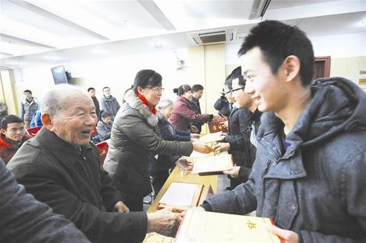

校内快讯|专题报道|校报在线|高校动态|瑜园热点|返回首页 |
|
崔崑院士及家人捐资420万元设立勤奋励志助学金  2013年12月26日，“勤奋励志助学金”签约暨发放仪式举行。该助学金由中国工程院院士崔崑一家向华中科技大学教育发展基金会捐资420万元设立，每年资助28位本科生，每人次8000元。校党委常委、总会计师湛毅青出席签约仪式。材料学院原党总支书记郑恩焰主持仪式。 崔崑在讲话中阐述了他及家人捐资助学的初衷。他告诉同学们，大学是人生中最珍贵、最值得怀念的一段时间。他希望同学们珍惜时间，勤奋学习，健全体魄，提高人文素质，学好本领，热心公益事业，增强社会责任感，为实现中华民族伟大复兴的中国梦作出贡献。 |
|